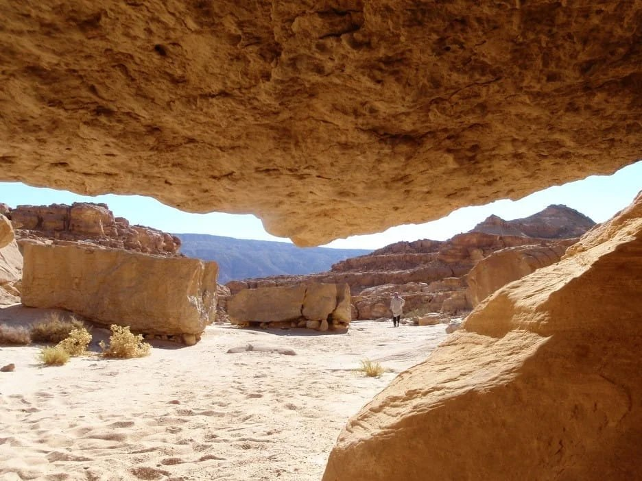
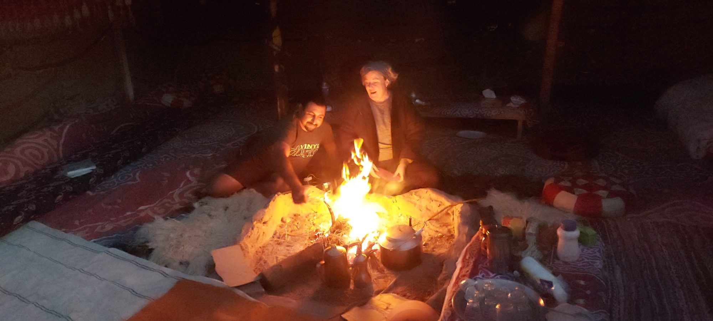
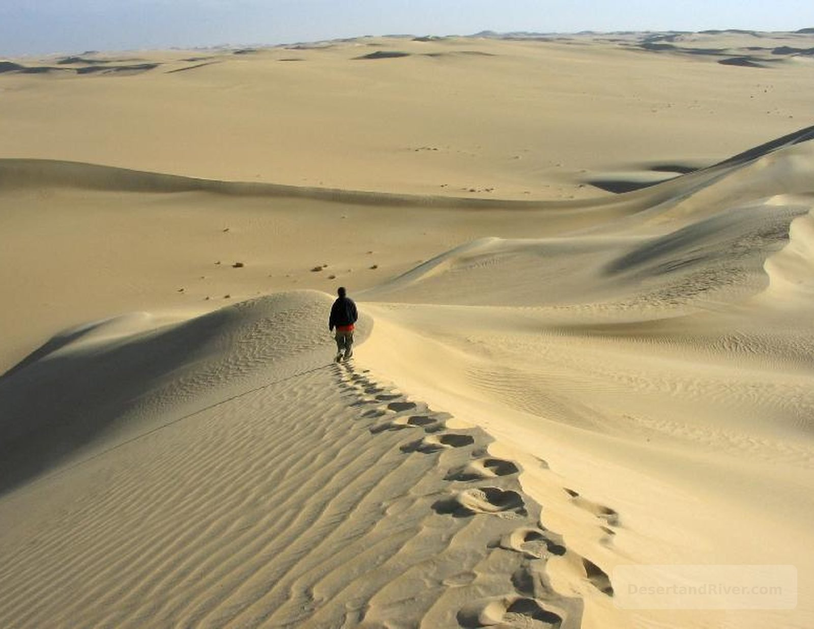

رحلة اليوم تريك الصحراء. أما ليلة فيها فتريك شيئًا مختلفًا تمامًا: الصمت حين تخبو النار، وسماء معتمة إلى حد أن درب التبانة لا يحتاج إلى تلسكوب. تتبع رحلة التخييم هذه ليومين من دهب مسار رحلتنا ليوم واحد إلى عرادة، لكن دون استعجال: وقت أطول في كل محطة، ومكوث أطول في الوادي، وليلة في الصحراء في المنتصف. يقودها جوزيف وآنيت معًا، بأكثر من 30 عامًا من الإرشاد في سيناء وقرابة 20 عامًا من العيش في دهب.

اليوم الأول: نقوش ووادٍ ومخيم، على مهل
تغادر رحلة الجيب دهب في الثامنة صباحًا على الطريق الداخلي نحو وادي عرادة. البداية نفسها كرحلة اليوم الواحد، لكن مع يوم كامل إضافي أمامنا لا شيء يحتاج إلى استعجال. نأخذ وقتنا بين النقوش الصخرية القديمة، ثم نمشي ونتسلق عبر الوادي المزدوج مرورًا بشعاب مرجانية متحجرة. غداء صحراوي طويل، وزيارة مقابر النواميس، ومشي سهل في وادي حماطة مع ليونة الضوء، تأخذنا إلى المخيم للعشاء حول النار.

أين ستنام: اختر مخيمك

وادي الزجزاج: المخيم الرومانسي
محميًا بين الجدران المتعرجة لوادي الزجزاج: عشاء على ضوء الشموع في الهدوء، ونور النار على الحجر الرملي، وليلة يحتضنك فيها الصخر. صُمّم لشخصين.

في العراء قرب جبل مخروم: مخيم عشّاق النجوم
النوم في الصحراء المفتوحة قرب جبل رأس التنين، بعيدًا عن أي تلوث ضوئي. في ليلة صافية بلا قمر يمتد درب التبانة من أفق إلى أفق. خطّط حول المحاق للحصول على أكثر السماوات عتمة.
رحلة اليوم تريك الصحراء. أما ليلة فيها فتريك شيئًا مختلفًا تمامًا.
اليوم الثاني: جبال وكثبان وطريق العودة الهادئ
صباح هادئ في المخيم، ثم جبل رأس التنين (جبل مخروم) للإطلالة على أرض الحجر الرملي وحقول الكثبان أسفله. والختام الكبير عند كثيب حضيضة: تزلّج على الرمال، أو اصعده أكثر من مرة، أو راقب الضوء وهو يتحرك عبر الصحراء، قبل العودة إلى دهب.

مشمول
- كل التنقلات من دهب وإليها
- كل الوجبات والمشروبات، شاملة العشاء والإفطار والغداء
- مخيم صحراوي للمبيت: تختار بين وادي الزجزاج أو العراء قرب جبل مخروم
- مرشدوك في الصحراء
- كل رسوم المواقع
غير مشمول: الإكراميات والمصروفات الشخصية.
أحضر معك
- أحذية مشي جيدة
- جواز سفرك (نقاط تفتيش على الطرق الداخلية)
- ملابس دافئة، فليالي الصحراء باردة
- بعض النقود لشراء تذكارات من البدو المحليين
السعر
600 يورو للسيارة، خاصة، كل شيء مشمول
لديك يوم واحد فقط؟
برنامج اليوم الثاني كاملًا متاح أيضًا كرحلة ليوم واحد من دهب. اطّلع على رحلة اليوم الواحد إلى عرادة.
اطّلع على رحلة اليوم إلى عرادة